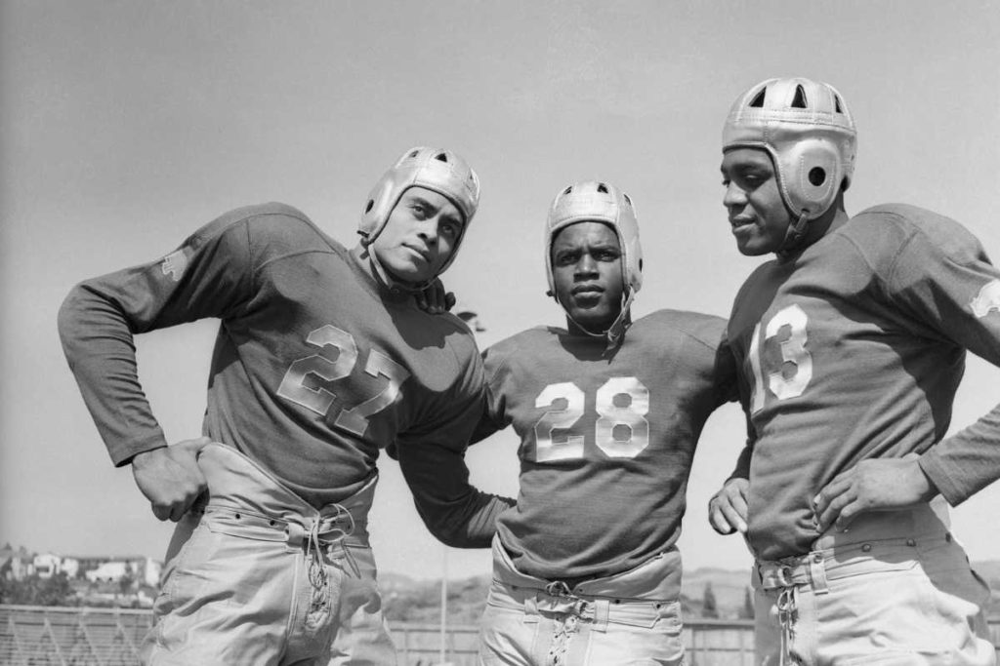

La National Football League fue fundada en 1920 bajo el nombre de American Professional Football Association (APFA), antes de adoptar su nombre actual en 1922. En sus primeros años, la liga enfrentó numerosos desafíos, como la inestabilidad de los equipos y la baja popularidad del deporte en comparación con el béisbol. Sin embargo, con el paso del tiempo, la NFL logró consolidarse gracias a una mejor organización y al crecimiento del interés del público.
Uno de los momentos más importantes en la historia de la liga fue la NFL-AFL Merger, que unificó a la NFL con la American Football League (AFL). Esta unión dio lugar a la estructura actual de dos conferencias (AFC y NFC) y fortaleció significativamente la competencia. Además, el nacimiento del Super Bowl se convirtió en el evento deportivo más importante de Estados Unidos, atrayendo a millones de espectadores cada año.
A lo largo de las décadas, la NFL ha sido escenario de momentos históricos y grandes dinastías, como la de los San Francisco 49ers en los años 80 o la de los New England Patriots en el siglo XXI. Estos equipos, junto con figuras legendarias, han ayudado a construir el legado de la liga, convirtiéndola en un fenómeno global que sigue creciendo y evolucionando hasta la actualidad.
